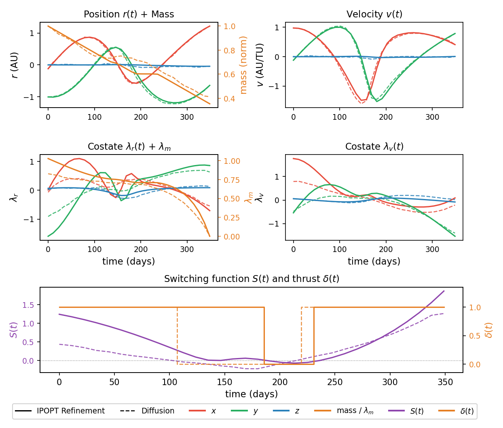

Trajectory Videos
Each video animates the full pipeline: 30 diffusion denoising steps (green) followed by IPOPT collocation iterations (orange), ending on the converged optimal trajectory. Select a departure shift below.
Abstract
Diffusion-based generative models (DMs) have found applications in control problems, and in particular robotics, where the DMs enable exploration of possible control solutions. A critical shortcoming of these applications is that they have lacked optimality guarantees. This is a problem for their potential use to fuel-optimal spacecraft trajectories that are characterized with long time-horizons and bang-bang profiles. Alternatively, indirect optimal control methods ensure explicit satisfaction of necessary conditions, but are highly sensitive to the initial costate estimation needed to solve the resulting Hamiltonian boundary-value problems (HBVPs). To alleviate this sensitivity and enlarge the convergence domain of HBVPs, advanced indirect methods have been developed that use smoothing approaches and continuation. We propose a diffusion-based multiple shooting indirect control method that combines the exploration capability of DMs with indirect method to generate fuel-optimal spacecraft trajectories. We benchmark our method against an advanced indirect method on a fuel-optimal Earth–Mars low-thrust transfer problem, showing higher convergence robustness than the advanced indirect method that is based on random costate initialization.
Method
Stage 01
Diffusion Denoising
A transformer-based diffusion model, trained on 49,000+ optimal trajectories, denoises a random noise trajectory conditioned on the departure and arrival boundary states. The 30-step reverse process produces a physically plausible state–costate trajectory (r, v, m, λr, λv, λm) at 32 collocation nodes.
Stage 02
BVP Refinement
The diffusion output initializes an IPOPT-based collocation solver that enforces the Pontryagin optimality conditions exactly.
Compared against an advanced indirect method (ε-continuation baseline) starting from a Keplerian-propagated guess with random costate initialization.
Results
| Shift (d) | Ours | Baseline | mf (kg) | Shift (d) | Ours | Baseline | mf (kg) |
|---|---|---|---|---|---|---|---|
| −700 | 100.0% | 57.5% | 730.0 | +50 | 100.0% | 56.8% | 659.6 |
| −600 | 100.0% | 48.5% | 489.2 | +100 | 100.0% | 52.4% | 722.7 |
| −500 | 0.0% | 0.0% | — | +200 | 0.0% | 0.0% | — |
| −400 | 0.0% | 0.0% | — | +300 | 0.0% | 0.0% | — |
| −300 | 100.0% | 18.0% | 354.3 | +400 | 0.4% | 6.0% | 285.0 |
| −200 | 100.0% | 31.0% | 476.9 | +500 | 100.0% | 16.8% | 393.5 |
| −100 | 100.0% | 54.5% | 544.4 | +600 | 100.0% | 32.4% | 450.1 |
| −50 | 100.0% | 59.5% | 568.9 | +700 | 100.0% | 52.8% | 486.4 |
| +0 | 100.0% | 62.0% | 603.9 |
Shifts −500, −400, +200, +300 represent a conjunction zone where both methods fail consistently.

Citation
@inproceedings{tafazzol2025dbic, title = {Bridging Exploration and Optimality: A Diffusion-Based Indirect Method for Spacecraft Fuel-Optimal Trajectory Generation}, author = {Tafazzol, Saeid and Taheri, Ehsan and Beeson, Ryne}, booktitle = {IEEE Conference on Decision and Control}, year = {2025}, }